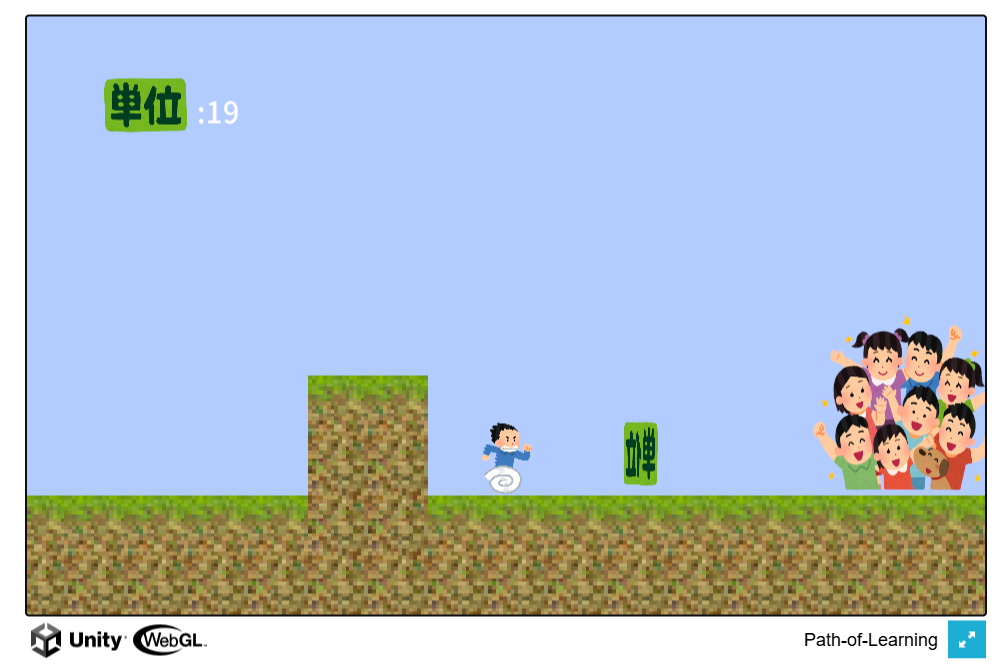

Path-of-Learning
概要:
本作品は、研究室のオープンキャンパス用に制作した横スクロール型のアクションゲームです。
プレイヤーは単位（アイテム）を集めながらゴールを目指します。
UnityとC#を用いて私がメインでプログラミングを担当し、メンバーからの意見やデバッグの協力を受けながら開発しました。
Web上でアクセス可能とするため、WebGLでビルドしました。
使用技術: Unity,C#,WebGL
開発期間: 2024年6月〜2024年7月
特徴: 横スクロール型の学習モチーフゲーム（「単位」を集めてゴールを目指す）。キーボード操作によるキャラクター移動とジャンプ。
画面スクリーンショット:

URL: 作品のリンク